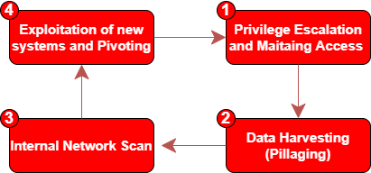

Post Exploitation
What we have to do in the Post-Exploitation phase (after that a target system has been compromised)
This is a cyclic process due the fact that you could discover new networks, new hosts, new targets that once you have compromised can store and provide information that others do not store
What we have to take in mind:
•
Do not forget the rules of the engagement, be sure to have the permissions:
◇ to modify services
◇ to modify machine configurations
◇ to escalate privileges
◇ to gather sensitive informations
◇ to delete logs...
◇ ...
•
Record your changes, keep track of actions taken against the compromised machines:
◇ date and time of the changes made to documents, services, applications and configurations (include changes in the Final Report)
◇ private data discovered
◇ methods used to maintain access
•
Handling Informations, all data discovered and gathered must be protected
◇ encrypt it on your pentesting machine
◇ delete it once the pentest is completed
◇ Even when reporting sensitive information to your client(such as a screenshots containing username or passwords) be sure to always obfuscate the data
•
Maintaining access clean-up ◇ maintain access on a compromised machine allow us to get back on the machine whenever we want, usually using a backdoor on the system.
Remember to delete everything once the pentest is complete.
•
How handle permanent changes on the exploited systems
◇ if the rules of engagements permits permanent edits, be sure to back up the logs before delete or modify them
Bibliography:
{kind=link}